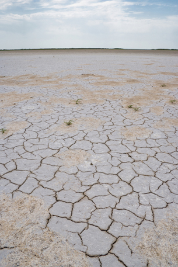
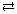

Module 8—Acid-Base Equilibrium

© AndreyTTL/shutterstock
 Reflect and Connect
Reflect and Connect
Earlier in this lesson you learned that the salinity of soil affects plants’ ability to absorb water. In soils with high salinity, the large concentration of chloride ions in the soil retains water, preventing the water from being absorbed by plants.
Soil salinity is the result of the leaching of chloride ions from salt formations beneath the surface and accumulations of the solutes where water collects and evaporates. In areas with high salinity, like the one shown in the photograph, a solubility equilibrium exists where salt precipitates and dissolves depending on the availability of water.
Complete the following investigation to analyze the solubility of chloride ions in the equilibrium provided.
Read “Exploration: Salty Acid or Acidic Salt?” on page 711 of the textbook. Then watch the virtual presentation “Exploration: Salty Acid or Acidic Salt?”
 Self-Check
Self-Check
SC 3. Complete “Exploration: Salty Acid or Acidic Salt?” questions a–f on page 711 of the textbook.
Self-Check Answers
Contact your teacher if your answers vary significantly from the answers provided here.
SC 3.
- Both solutions, sodium chloride and hydrochloric acid, contain dissociated chloride ions. Therefore, there will be no reaction when the two solutions are mixed.
- NaCl(aq)  Na+(aq) + Cl–(aq)
- Kc = [Na+(aq)] [Cl–(aq)]. Since the sodium chloride solution is saturated, all substances in the system have a constant concentration.
- When the concentrated hydrochloric acid was added, a white precipitate formed. It appears that the addition of HCl(aq) shifts the equilibrium to the left, favouring the reverse reaction and allowing the formation of NaCl(s).
- The addition of HCl(aq) adds Cl–(aq) and some water to the system but does not add Na+(aq). Therefore, the concentration of sodium ions decreases when HCl(aq) is added. This could be a stress on the system and, as predicted by Le Châtellier’s principle, the forward reaction would be favoured (to increase the concentration of Na+(aq)).
The result of this stress is a further increase in the concentration of chloride ions to a level that exceeds the concentration that is possible to remain dissolved. This situation favours the reverse reaction, and the precipitate of NaCl(s) forms.
- The concentration of chloride ions in the concentrated hydrochloric acid must have been higher than the concentration of chloride ions in the saturated sodium chloride solution. Any other possibility would not have resulted in a situation that increased the concentration of Cl–(aq) past its maximum solubility.
Reflect and Connect
You initiated summaries earlier in this lesson. Update your summaries to include concepts you learned in this lesson. Save a copy of your updated summaries in your course folder. You may be asked to submit a copy of your summaries to your teacher or to share one or more of your summaries with other students in your class.
 Module 8: Lesson 1 Assignment
Module 8: Lesson 1 Assignment
There is no assignment for this lesson.